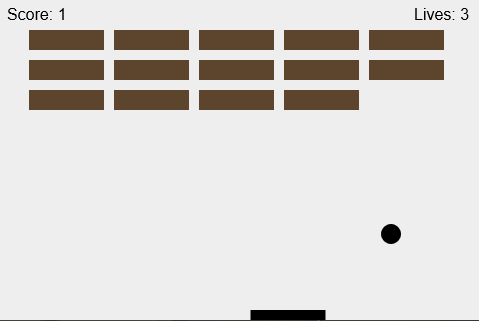
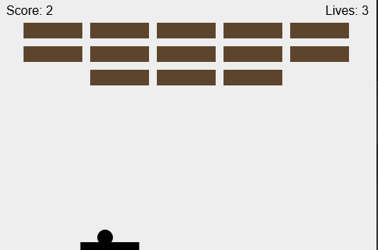
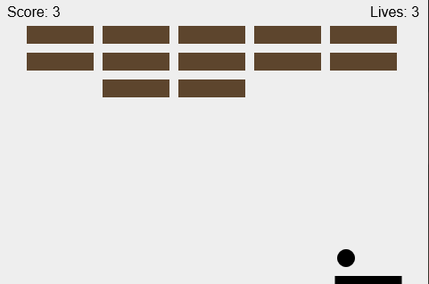
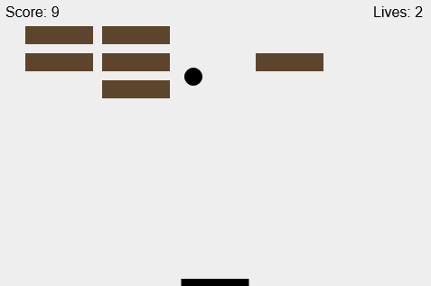
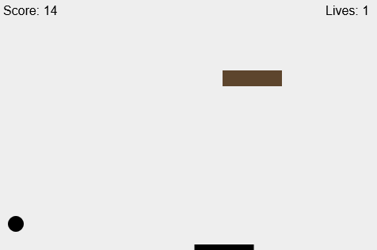
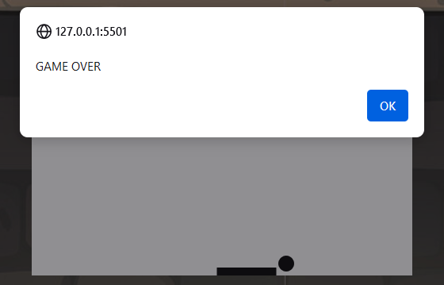

UITLEG GAME

Stap 1 Als de game begint, gaat de bal automatisch naar de blokjes. |

Stap 2Hier kun je een voorbeeld zien van uitleg 1 |

Stap 3Je moet de bal raken met de paddle. |

Stap 4(lives) laat je weten hoeveel levens je hebt. |

Stap 5 JE hebt MAXIMAAL 3 levens. |

Stap 6Dan krijg je een melding. |